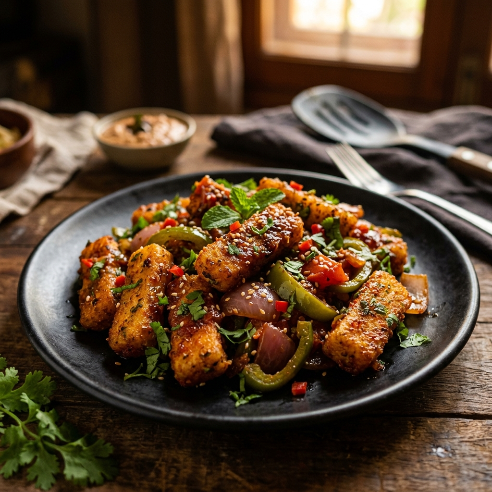

Spicy Crunchy Masala Idli
A genius hack to transform soft or leftover idlis into crispy, finger-shaped bites tossed in a sweet, spicy, and tangy capsicum and onion masala glaze.

Ingredients
Tip: Tap items to check them off as you prep!
Step-by-Step Instructions
Follow steps sequentially. Mark completed steps to keep track.
Nutrition Facts
Estimated values per serving.
240
Calories
5g
Protein
6g
Fat
42g
Carbs
Tips for Beginners
- Cold Idli Rule: Freshly made idlis contain too much moisture and break easily. Using cold, refrigerated idlis yields the absolute best crunchy results!
- Fries Alternative: Think of this as a healthier Indian street-food alternative to loaded french fries.
- Stir-Fry Heat: Keep the heat high when tossing the idlis in the final step so the sauce glazes the idlis rather than soaking into them and making them soft.